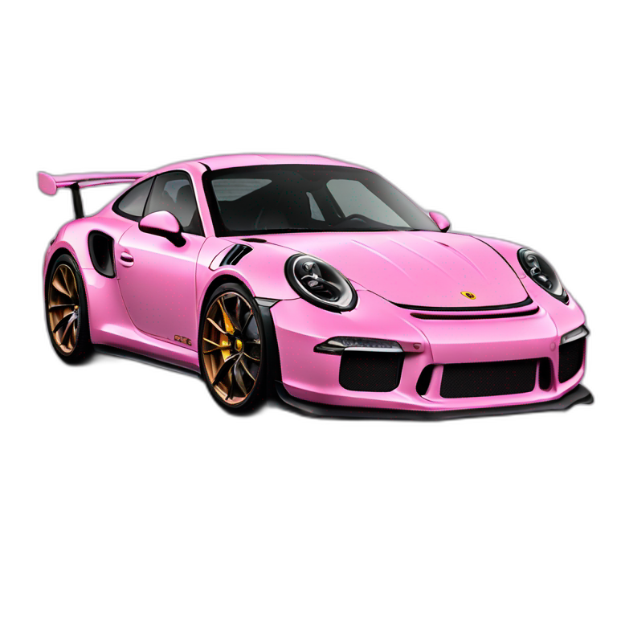
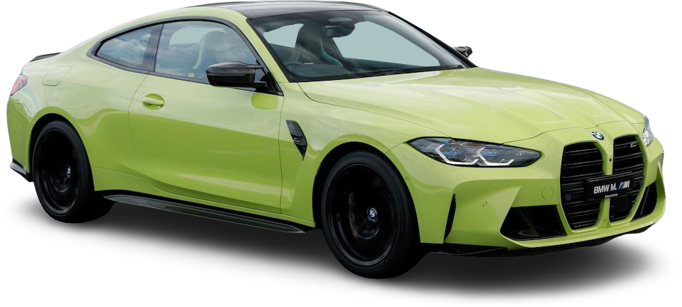
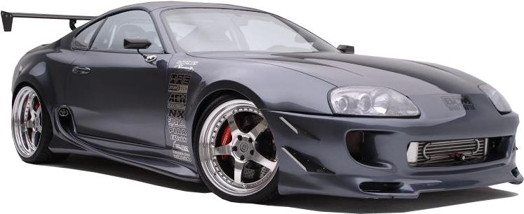

On this page you will learn more about these cars.
 The Porsche 911 GT3 RS features a naturally aspirated 4.0-liter flat-six engine that delivers razor-sharp throttle response and a spine-tingling exhaust note. It produces over 500 horsepower and is mated to a lightning-quick PDK dual-clutch transmission, enabling blistering acceleration and precise gear changes.
 The BMW M3 Competition is a powerful, It has hood lies a twin-turbocharged 3.0-liter inline-six engine that delivers 503 horsepower and 479 lb-ft of torque, paired with an 8-speed automatic transmission for swift, seamless shifts. Available in both rear-wheel and xDrive all-wheel drive configurations, the M3 Competition offers incredible traction and dynamic handling, making it equally at home on winding roads or racetracks.
 The Toyota Supra Mk4 is powered by the iconic 3.0-liter 2JZ-GTE inline-six engine with twin turbochargers, the Mk4 Supra delivered up to 276 horsepower in stock form (more in reality), with incredible durability that made it a favorite among tuners aiming for 1,000+ horsepower builds. It featured a balanced rear-wheel-drive chassis, a sleek, aerodynamic body, and advanced technology for its time.